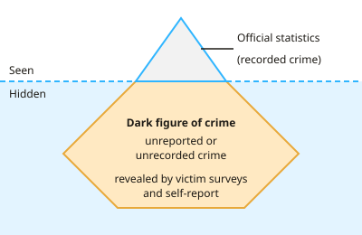

GCSE Psychology · Topic 6
Criminal psychology
Criminal psychology explores why people commit crimes, and how society responds.
We will study how crime is defined and measured, and biological and psychological explanations of offending.
Then we look at offender profiling, and ways of dealing with offenders and reducing reoffending.
- 5 subtopics
- 257 questions
- Free: 6.1 notes and 10 questions
In this topic
- 6.1Defining crime and measuring crime: official statistics, victim surveys and self-reportFree below · 76 questions
- 6.2Biological explanations of offending: Lombroso, genetics and brain differencesOpen in Full Marks · 46 questions
- 6.3Psychological explanations of offending: Eysenck's personality theory and social learningOpen in Full Marks · 46 questions
- 6.4Offender profiling: top-down and bottom-up approaches and case studiesOpen in Full Marks · 38 questions
- 6.5Dealing with offending: prison, restorative justice, anger management and recidivismOpen in Full Marks · 51 questions
6.1 · Free notes
Defining crime and measuring crime: official statistics, victim surveys and self-report

Key points
- A crime is an act that breaks the law and is punishable by the state. What counts as a crime changes over time and between cultures (for example, cannabis possession is legal in some countries but illegal in the UK).
- Official statistics are figures recorded by the police and published by the Home Office and ONS. They are quantitative data on crimes that have been reported and recorded.
- Strengths of official statistics: they are objective, cover the whole country, and show trends over many years, so they can be compared year on year.
- The main weakness of official statistics is the dark figure of crime: crimes that are never reported or never recorded. Victims may think a crime is trivial, fear the offender, or distrust the police.
- Police recording practices and laws change, so a rise in recorded crime may not mean a real rise in crime. It may just mean more reporting or better recording.
- A victim survey asks people about crimes they have experienced, whether or not they reported them. The main UK example is the Crime Survey for England and Wales (CSEW), which asks people about the last 12 months.
- Strengths of victim surveys: they reveal unreported crime and use large, representative samples. They also show why victims did not report, and the same questions can be repeated each year.
- Weaknesses of victim surveys: they rely on memory, so people may forget events or place them in the wrong year. People may also exaggerate or hide experiences. They cannot cover murder or crimes with no direct victim, such as drug dealing.
- Self-report studies ask people to say which offences they have committed, usually anonymously by questionnaire or interview. The Offending, Crime and Justice Survey is an example.
- Strengths of self-report: it uncovers undetected offending and can link offending to other factors such as age or peer group. Weaknesses: participants may lie, exaggerate or forget, and social desirability bias is likely.
- Worked example: if police record 2,400 burglaries and a survey estimates 6,000, then 2,400 ÷ 6,000 × 100 = 40% were recorded. The other 60% are part of the dark figure.
- Exam tip: when evaluating, compare methods directly. Official statistics miss the dark figure, victim surveys depend on recall, and self-report depends on honesty. Using all three gives the most complete picture.
In more detail
- Worked dark figure: if police record 2400 burglaries but a survey estimates 6000, then 3600, or 60%, went unrecorded.
- Victim survey: the Crime Survey for England and Wales asks people about crimes they have experienced, whether or not they reported them.
- Self-report: asking people anonymously which crimes they have committed reveals offending that was never detected.
- Changing figures: new laws or police recording practices can make recorded crime rise without more crime actually happening.
- Comparison: official statistics cover the whole country but miss unreported crime; surveys reveal hidden crime but rely on memory and honesty.
Practice
Defining crime and measuring crime: official statistics, victim surveys and self-report: 10 questions
Pick an answer to check it, or open the answer for the explanation.
1. Which of these is a victim survey used to measure crime in England and Wales?
- Police recorded crime figures
- Court conviction records
- Prison population statistics
- Crime Survey for England and Wales
Show answer
D: Crime Survey for England and Wales. The Crime Survey for England and Wales asks people about crimes they have experienced, including those never reported to the police. The other options are official records.
2. A researcher anonymously asks 300 teenagers which crimes they have committed in the past year. Which method of measuring crime is this?
- Case study
- Self-report
- Victim survey
- Official statistics
Show answer
B: Self-report. Offenders (or potential offenders) are reporting their own behaviour, so this is self-report. A victim survey would ask about crimes committed against them.
3. Which is a strength of victim surveys compared with police statistics?
- They include murder victims
- They include crimes never reported to the police
- They record every crime committed
- They cannot be affected by memory
Show answer
B: They include crimes never reported to the police. Victim surveys ask about experiences whether or not the police were told, so they reveal part of the dark figure. They still depend on memory and cannot ask murder victims.
4. Which is a limitation of self-report studies of offending?
- They only include convicted offenders
- They cannot be anonymous
- Participants may lie or forget to look law-abiding
- They only measure violent crime
Show answer
C: Participants may lie or forget to look law-abiding. Social desirability bias and poor recall reduce validity, even when responses are anonymous. Self-report can include undetected offending and many types of crime.
5. Police record 2,400 burglaries in a town. A victim survey estimates 6,000 burglaries took place. What percentage of burglaries were recorded?
- 24%
- 40%
- 60%
- 250%
Show answer
B: 40%. 2,400 ÷ 6,000 × 100 = 40%. The remaining 60% (3,600 burglaries) form part of the dark figure.
6. Why does the definition of crime change over time and between countries?
- Only violent acts count as crime
- Laws are made by governments and can change
- Crime is the same everywhere
- Psychologists decide what counts as crime
Show answer
B: Laws are made by governments and can change. A crime is defined by law, and laws differ between countries and change over time. Cannabis possession is one example.
7. Recorded theft rose by 20% in one year, but a victim survey showed no change in theft. What is the most likely explanation?
- Police recorded more of the thefts reported to them
- Theft was made legal
- Offenders became more skilled
- Victim surveys are always wrong
Show answer
A: Police recorded more of the thefts reported to them. Official statistics depend on reporting and recording practices. Changes in these can create an apparent rise even when the real level of crime is stable.
8. Which crime would a victim survey be least able to measure?
- Vandalism to a house
- Murder
- Burglary at home
- Car theft
Show answer
B: Murder. Murder victims cannot be interviewed, so victim surveys cannot measure it. Police figures are the main source for homicide.
9. Which statement about official statistics is correct?
- They are based on crimes recorded by the police
- They are collected by asking offenders
- They include all crimes committed
- They are qualitative data only
Show answer
A: They are based on crimes recorded by the police. Official statistics come from crimes that are reported to and recorded by the police. They are mainly quantitative and miss the dark figure.
10. A respondent in a crime survey describes a robbery from 14 months ago when asked about the last 12 months. Which weakness does this show?
- Inaccurate recall by participants
- Lack of anonymity
- Police bias in recording
- A small sample size
Show answer
A: Inaccurate recall by participants. Placing an event in the wrong time period is a memory error. Victim surveys depend on accurate recall, which affects the validity of the data.
Keep going in Full Marks
Full Marks has 76 questions on Defining crime and measuring crime: official statistics, victim surveys and self-report (66 more than here), set out in practice levels. You also get notes and 3D models for all 5 subtopics of Criminal psychology, plus games, timed exams and past papers.
On your exam board
Not in the AQA and Cambridge specifications.